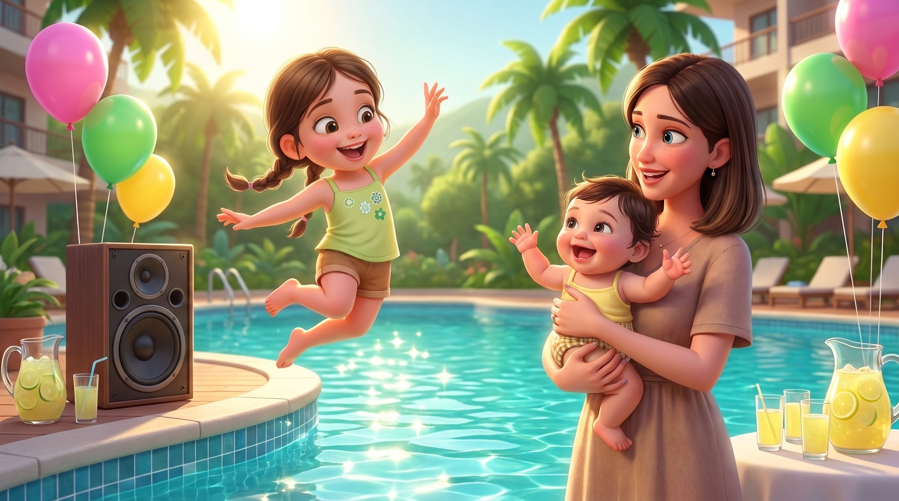
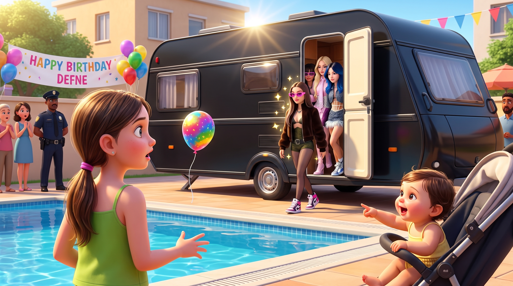
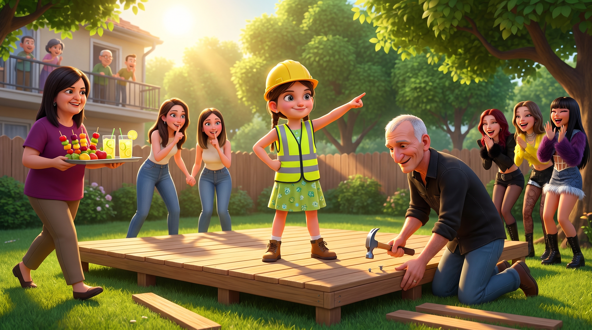
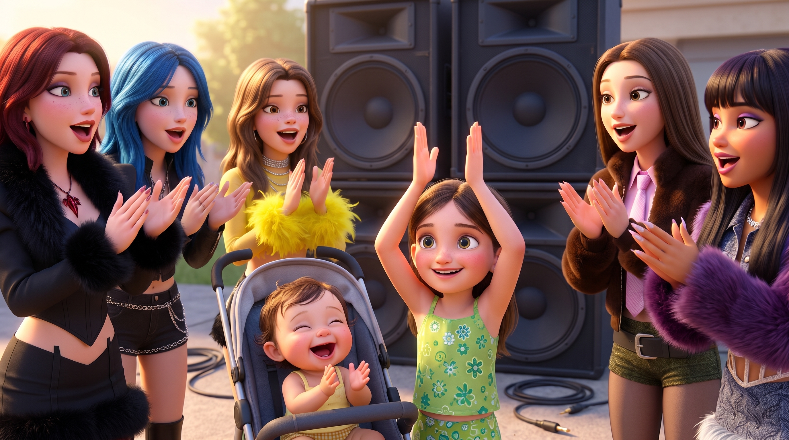
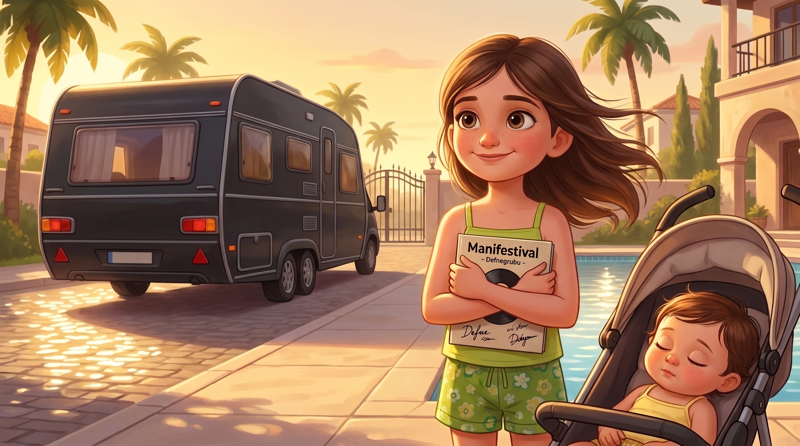

Merhaba! Ben Defne. Tam 9 yaşındayım ve Antalya'da yaşıyorum. ☀️
Kendi hayatımın başrolünde olduğum "Defne ve Manifest: Antalya’da Sürpriz Doğum Günü" hikayesine hoş geldiniz! 📖✨
Dans etmeye, yeni figürler öğrenmeye ve tabii ki Manifest grubunun şarkılarına bayılırım! 🎶💃
Minik kuzenim Beren ile vakit geçirmek ve onu kıkırdatmak en sevdiğim şeylerden biridir. 👶💖
Havuz başındaki doğum günü partimde beni bekleyen o devasa sürprizi öğrenmek ister misiniz? 🚐🤫

Antalya’nın sımsıcak, pırıl pırıl bir yaz sabahında, sitenin devasa havuzunun etrafında tatlı bir telaş vardı. Rengarenk balonlar şişiriliyor, masalar süsleniyordu. Çünkü bugün çok özel bir gündü; Defne tam 9 yaşına basıyordu!
Defne'nin doğum günü partisinin teması, tabii ki en büyük tutkusu olan Manifest grubuydu. Teyzesi Beste, havuz kenarındaki büyük hoparlörden Manifest'in "Zamansızdık" şarkısını açmıştı bile. Defne heyecanla grubun o meşhur koreografilerini saniye saniye sergilerken, onun en büyük hayranı teyzesinin kucağında oturan, henüz 10 aylık minik kuzeni Beren'di. Defne zıplayıp dans ettikçe Beren kıkırdar, pusetinden sarkıp tombik ellerini birbirine vurarak ona eşlik etmeye çalışırdı. Annesi Ezgi şezlongdan onlara sevgiyle bakarken, anneannesi Ebru, Defne'nin doğum günü pastasının yanına buz gibi limonatalar hazırlıyordu.

Defne tam "Arıyo" şarkısının en zor dans figürünü yapıp minik Beren'i güldürmeye çalışırken, sitenin kapısından içeri devasa, simsiyah ve camları filmli bir karavan girdi. Sitenin güvenliği şaşkınlıkla aracı izlerken, karavan doğrudan havuzun yanındaki geniş otoparka yanaştı.
Minik Beren parmağıyla kocaman arabayı işaret edip "Baaa!" diye sesler çıkarırken karavanın kapısı açıldı. Önce havalı spor ayakkabılar, ardından renkli güneş gözlükleri göründü. Defne’nin gözleri kocaman oldu. Elindeki süsleme balonu usulca yere düştü. Gelenler Esin, Lidya, Mina, Sueda, Hilal ve Zeynep'ti... Manifest grubu tam karşılarındaydı!
Defne heyecandan donakalmıştı. Esin, havuz kenarındaki "İyi ki Doğdun Defne!" yazılı pankartı görüp kocaman gülümsedi ve onlara doğru yürüdü. "Merhaba! Doğum günü partinizi bölüyoruz galiba ama akşamki Antalya konserimiz için gizli bir prova yapacak, basından uzak sakin bir yer arıyorduk. Sitenizin havuzu çok güzel görünüyordu. Bize de aranızda biraz yer açar mısınız?"

Defne, şaşkınlığını üzerinden atıp anında sitenin fahri menajeri moduna girdi! "Tabii ki!" dedi gururla. "Burası benim doğum günü sahnem, ama bugünlük sizinle seve seve paylaşabilirim!"
Tüm aile anında seferber oldu. Dedesi Atilla, yılların tecrübesiyle havuzun yanındaki ahşap platformun altını üstünü hızlıca inceleyip, "Kızlar, burası oldukça sağlam, prova için gönül rahatlığıyla kullanabilirsiniz," diyerek teknik onayı verdi.
Anneannesi Ebru, Manifest üyeleri için hazırladığı özel doğum günü ikramlarını ve meyve tabaklarını hemen sahne kenarına taşıdı. Annesi Ezgi ve teyzesi Beste ise sitedeki komşulara haber uçurarak herkesin sessizce izlemesini tembihlediler. Bu sırada babası Hilmi, gün ışığının en dik ve parlak olduğu bu saatlerde ışık patlamalarını önlemek için telefon kamerasının pozlama ayarlarını ustalıkla yapıyor, kızının bu tarihi anını en net haliyle ölümsüzleştirmeye hazırlanıyordu.

Prova harika başlamıştı. Manifest, sadece Defne'ye özel olarak "Başrol Sensin" şarkısını söylerken Defne de sahnenin hemen kenarında onlara dansıyla eşlik ediyordu. Minik Beren ise annesinin kucağında müziğin ritmine kapılmış, neşeyle sallanıyordu.
Tam şarkının en coşkulu yerinde, güm! Sitenin elektrikleri kesildi. Müzik sustu, hoparlörler kapandı.
Manifest üyeleri şaşkınlıkla birbirine bakarken, Defne derin bir nefes aldı. "Pes etmek yok!" dedi fısıldayarak. Defne, grubun "Amatör" şarkısının ritmini elleriyle tutmaya başladı. Alkışlarla güçlü bir ritim oluşturdu. Onu gören minik Beren de neşeyle kıkırdayıp minik ellerini çırpmaya başladı. Lidya ve Mina, Beren'in bu tatlı haline dayanamayıp gülümseyerek alkışlara katıldı. Ardından Sueda, Hilal, Zeynep ve Esin... Elektriksiz, mikrofonsuz, sadece alkışlar, Defne'nin enerjisi ve Beren'in kıkırdamaları eşliğinde havuz başında harika bir akustik performans başladı. Şarkının sonunda tüm grup hep bir ağızdan "İyi ki doğdun Defne!" diye bağırdı.

Elektrikler yarım saat sonra geldiğinde, Manifest provasını çoktan tamamlamış, Defne'nin pastasını kesmiş ve aileyle harika bir bağ kurmuştu. Karavana binmeden önce Esin, sırt çantasından grubun tüm üyelerinin imzaladığı "Manifestival" albümünü çıkarıp Defne’ye uzattı. Daha sonra eğilip minik Beren'in yanağına yumuşak bir öpücük kondurdu.
"Bizi kurtardığın ve harika ritmin için teşekkürler Defne. Bu albüm senin 9. yaş günü hediyen. Ve tabii ki, akşamki konserimizin en özel VIP konuğu da sensin!" dedi Lidya göz kırparak.
Karavan siteden uzaklaşırken Defne bir elindeki imzalı albüme, bir de pusetinde yorgunluktan uyuyakalmış olan minik Beren'e baktı. Antalya'nın ılık rüzgarı saçlarını havalandırırken gülümsedi. Bu hayatta alabileceği en güzel doğum günü hediyesini almıştı. Artık emindi; kendi hikayesinin ve bu unutulmaz yeni yaşın gerçek başrolü kesinlikle kendisiydi.
~ Sonu ~